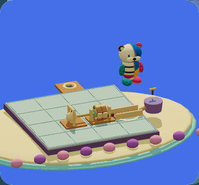
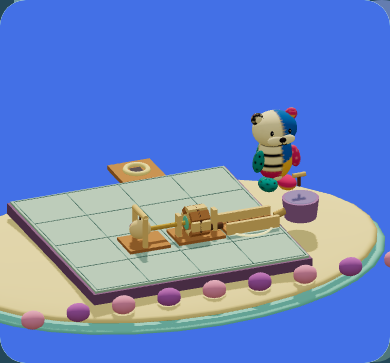

674a09b342c66f5e4b8a81fa41841d66bc215d4883b61ff0d1e04c4553977dd8
57af6cfe5da796248550f5f3032d95cf7785883627c9919735c663df09e075cf無加工の実アプリ PNG。CSS グリッドによる並列表示のみ。固定40の接地改善の限定記録。手元の読みやすさ・接地影・無文字理解・Source A 全面は HOLD。

674a09b342c66f5e4b8a81fa41841d66bc215d4883b61ff0d1e04c4553977dd8
57af6cfe5da796248550f5f3032d95cf7785883627c9919735c663df09e075cf